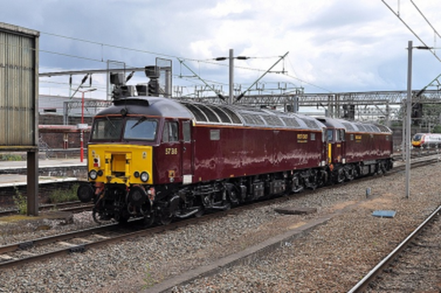

Module 2 · Nettoyer : 148 photos bruitées
Un bruit presque invisible à l’œil nu

À taille normale : on ne voit presque rien

Zoom sur une autre photo du lot : le grain apparaît
Bonne surprise
On a retrouvé les originaux
Ces photos viennent d’une base publique (MS COCO) : on a retrouvé l’original propre de chacune.
→ on peut mesurer le bruit exactement, et vérifier nos résultats sur de vraies images.
En moyenne, un pixel n’est décalé que de quelques niveaux, sur une échelle de 0 à 255 : un bruit léger, mais réel.
Leyenda · Nettoyer · Le problème
7 / 15